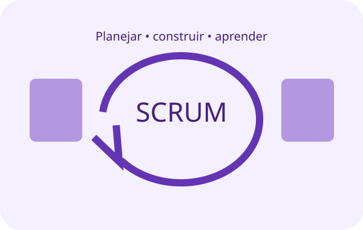
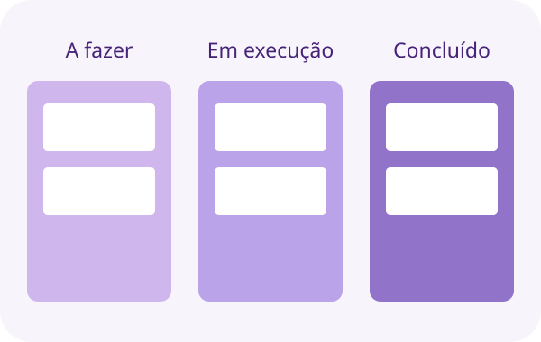
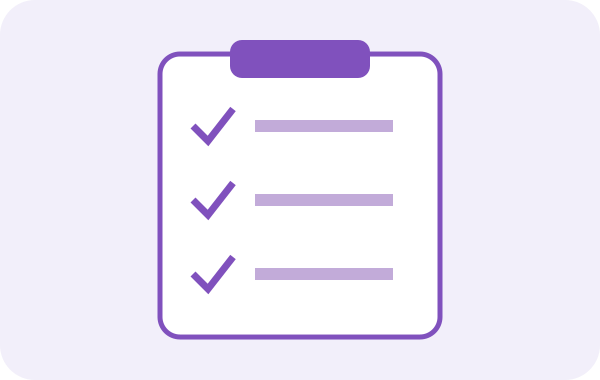
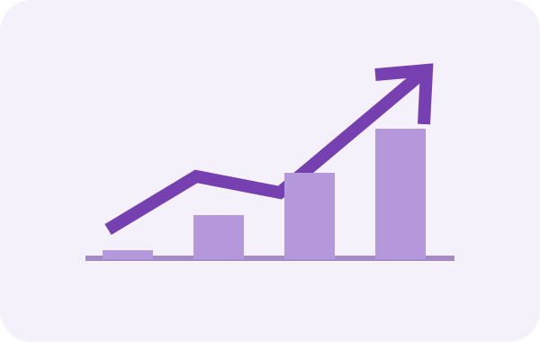
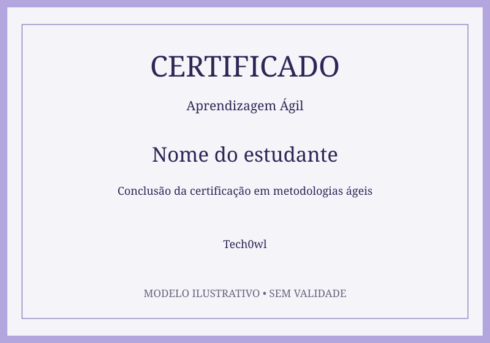

Scrum é um framework ágil que organiza projetos, como também outras funções que iremos abordar.

Scrum é um framework ágil que organiza projetos, como também outras funções que iremos abordar.

Kanban é um método ágil e visual para gerenciar fluxos de trabalho. “A fazer, Em execução, Concluído!”

Neste módulo veremos as ferramentas e a importância do uso de boas práticas em projetos ágeis.

Os fundamentos da agilidade, técnicas de planejamento e métricas para otimizar a gestão e o desempenho de projetos ágeis.
Conteúdo claro, organizado e de fácil compreensão.
O curso contribuiu para ampliar meus conhecimentos na área.
Agregou conhecimento e trouxe novas perspectivas para meu trabalho.
Depoimentos ilustrativos do protótipo.
Certificado incluso

Ao concluir todas as etapas, você recebe um certificado digital para destacar seus novos conhecimentos e fortalecer o seu portfólio.
São 12 temas, com uma questão sorteada por tema e 150 segundos para cada resposta. O certificado exige pelo menos 65% de acertos.
Esta versão apresenta as páginas do protótipo. A matrícula, a área de estudos e a prova pela interface ainda serão integradas nas próximas sprints.